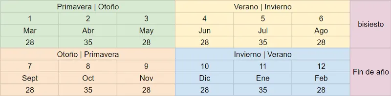
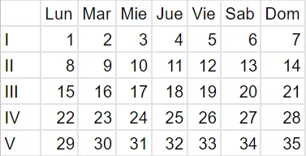

Diario de un Robot · 29 de noviembre de 2020November 29, 2020
Idea mesiánica 1: El calendario
Nuestra organización actual proviene de cultos a los planetas, religiones ya extintas, locuras del emperador y errores de cálculo matemático. Hay opciones más prácticas.
This essay is only available in Spanish for now.
De chico mi juego favorito consistía en agrupar todos los bloques de Lego, clasificarlos por tamaño y color, para después ponerlos muy prolijos en pilitas y compararlos. Imaginen mi decepción cuando aprendí cómo contamos nuestros días: meses de días variables, años bisiestos, nombres sin sentido. Hasta el día de hoy, este método me sigue pareciendo un espanto. Para las mentes ordenadoras, los problemas de nuestro calendario son evidentes y no son pocas las personas que propusieron, o impusieron, cambios. Propongo a continuación un breve recorrido por los problemas del calendario, los parches que se propusieron a lo largo del tiempo y mi propuesta de cambio.
En nuestro calendario no existe el año cero. Gracias a las tablas de Dionisio el Exiguo, pasamos del 31 de diciembre del año 1 a. C. al 1 de enero del año 1 d. C. Los meses pueden ser de 28, 29, 30 o 31 días. Septiembre, como su nombre no lo indica, es el noveno mes. El desfasaje antiintuitivo sigue corrido hasta diciembre, doceavo y último, pasando por octubre (décimo mes) y noviembre (décimo primero). Tuvimos un treceavo mes, Mercedonius, que solo duró unos siglos. En el 45 a. C. Julio César encargó su propio calendario, agregando a Quinctilis un día (mes de su nacimiento) y de paso cambiando su nombre a julio (para futuras confusiones con el mes vecino). Poco tiempo después, Augusto hizo lo mismo con Sextilis, hoy conocido como agosto, aprovechando que su predecesor ya había pasado a Ianuarius y Februarius al comienzo de año, abandonando el primero de marzo como fecha inicial. Las modificaciones de Julio César añadieron el bisiesto, que brinda eventualmente un día extra a febrero, anteriormente despojado de sus días para satisfacer el ego de emperadores.
Pasado más de un milenio, y estableciendo el comienzo en una errónea fecha de nacimiento de Jesús, el Papa Gregorio XIII lleva a cabo la reforma que da a luz al calendario gregoriano (desde 1582). Hoy en día, es el calendario cívico más usado en el mundo.
El año tiene aproximadamente 365 días, hecho fijo dado por la astronomía. En la mayoría de las culturas actuales, se divide en meses de 4 o 5 semanas de 7 días cada una. Las estaciones tienen alrededor de 91 días. Al tener el año 365 o 366 y no ser divisible por siete nos encontramos en un problema: los días en el calendario van a variar año a año. Tenemos 52 semanas por año más 1 o 2 días suplementarios, esto genera un desfasaje en las fechas que ocupa cada día de la semana. Son evidentes entonces dos problemas: qué hacer con los días extra y cómo agrupar las semanas del año. Dos opciones surgieron como solución: el calendario fijo internacional y el calendario mundial.
El calendario fijo internacional favorece la regularidad de sus meses, creado en 1902 por Moses B. Cotsworth, divide al año en 13 meses de 28 días cada uno, con uno o dos días al año que no forman parte de ningún mes ni semana. Cada mes comienza un domingo 1 y termina un sábado 28. Se añade, además, el mes Sol entre junio y julio. Esta regularidad lo convierte en un calendario perpetuo, permitiendo que pueda ser reutilizado año a año sin modificaciones ya que los días extras (el de fin de año y el bisiesto) no modifican la estructura de meses y semanas. Aparece entonces la ventaja de no tener que imprimir un calendario nuevo cada año y la facilidad de aprender de memoria las fechas. El 4 de marzo (mi cumpleaños) sería siempre miércoles, independientemente del año (lo siento cumplidores de lunes). Más importante aún, deja fijos feriados, fiestas nacionales y fiestas móviles (que suelen depender del día de la semana), favoreciendo la planificación a largo plazo. Aunque no es el único que logra esta recursividad.
El otro calendario perpetuo que se ha propuesto es el calendario mundial, creado en 1930 por Elisabeth Achelis (todavía con miembros en The World Calendar Association International). En este caso, se mantiene la estructura de doce meses. Evitando el número primo del anterior, es posible la división en trimestres y cuatrimestres, aspecto esencial para las estaciones del año (imaginen a los organismos burocráticos sin esta cualidad). Sin embargo, perdemos la excelente regularidad de los 28 días y recuperamos que un domingo pueda suceder en trece fechas diferentes (el horror). En este caso también mantenemos los días de fin de año y bisiestos por fuera del calendario, llamados Worldsday y Leapyear Day, que se asumen feriados mundiales. Aunque no mantenga la elegancia del calendario fijo internacional, logra una secuencia de tres meses que se repite con los mismos días. Es así como enero-febrero-marzo es equivalente a abril-mayo-junio y así para cada trimestre. A pesar de sus notables ventajas, algunos problemas surgirían del cambio debido a actualizaciones de sistemas de software y administrativos, fechas tradicionales y cumpleaños (que deberían ser recalculados), sin tener en cuenta la reticencia habitual al cambio.
Más allá de las dificultades técnicas para su implementación a nivel mundial, existe un mayor opositor a la modificación del calendario: los líderes religiosos.
Los representantes de cristianos, islámicos y judíos (al menos los más practicantes) se oponen porque ese día “vacío” o por fuera de la semana modificaría su tradición de adorar cada séptimo día, ya sea domingo, viernes o sábado. Las instancias asociadas al culto religioso, que suelen estar pensadas alrededor de ciclos lunares o semanales, se verían afectadas, con la adopción de un calendario perpetuo. Después de todo, estaríamos modificando el calendario gregoriano y pensando una visión más secular, tendencia que ya apareció con las propuestas de calendarios revolucionarios luego del 14 de julio de 1789 y el positivismo de Auguste Comte a mediados del XIX. Podemos entonces ir un paso más allá y volver al comienzo, ¿de dónde viene nuestro primer año y por qué lo mantenemos?
La idea proviene de un monje del siglo V, Dionisio el Exiguo (mencionado más arriba), quien propuso el cálculo del Anno Domini (“año del Señor”) asumiendo, erróneamente, el nacimiento de Jesús de Nazaret (hoy calculado entre 4 y 7 años antes). Esta imprecisión fue retomada por el Papa Gregorio XIII. Es así como el comienzo del calendario se basa en una fecha que quiso ser sagrada, pero terminó siendo equivocada, y hoy, al ser el calendario un fenómeno internacional, incluso pierde su sentido original. Mientras el nacimiento de Cristo puede ser un hecho relevante para algunos humanos, no lo es para la humanidad. Una fecha distinta de inicio puede ser considerada y quizás con un solo número resignifiquemos nuestro pasado. Varios han propuesto añadir diez mil años al calendario (tan solo agregar un 1). La idea fue llevada a cabo por Gabriel Deville (1924), luego E. R. Hope (1963) y Cesare Emiliani (1993) y es llamada el calendario holoceno. Hace referencia al pasaje entre el Pleistoceno y el Holoceno, iniciado hace unos 11.700 años, cuando aparecen las primeras evidencias hacia el sedentarismo en la humanidad. Nos encontraríamos entonces, ahora, en el año 12020 en camino hacia el 12021 y podríamos ver las cosas con mayor perspectiva temporal:
- Inicio: hallamos los restos de la primera gran construcción humana
- 6860: Civilización del Antiguo Egipto
- 7450: Construcción de la pirámide de Keops
- 8300: Redacción del código de Hammurabi y extinción de los mamuts
- 8807: Supuesta fecha de la Guerra de Troya
- 9248: Fundación de Roma por Rómulo y Remo
- 9438: Nace Buda Gautama
- 9957: Asesinato de Julio César
- 9971: Muerte de Cleopatra VII, última de los faraones
- 9994: Nacimiento de Jesús de Nazaret
- 10026: Crucifixión de Jesús
- 10622: Ocurre la Hégira
- 11440: Invención de la imprenta
- 11492: Colón desembarca en América
- 11969: El hombre llega a la Luna
- 12020: Año en curso.
Esta nueva línea del tiempo permite observar cómo los cambios en la humanidad tienen un trasfondo mucho mayor a los últimos 2000 años, en los que centramos la mayor parte de nuestro aprendizaje (quizás solo con la excepción de la Antigua Grecia y el Antiguo Egipto). Evitamos cuentas innecesarias y siempre podemos ubicarnos temporalmente dentro de los registros históricos: número más grande = evento más reciente. Nos permite además notar algunas peculiaridades históricas a simple vista: Cleopatra, la última faraona, vivió más cerca de la llegada del hombre a la Luna que de la construcción de las pirámides.
De todas las ideas, rescato dos modificaciones centrales: el año perpetuo y la añadidura de 10.000 años para favorecer la profundidad del tiempo en la civilización humana. Aunque las propuestas de calendarios perpetuos sean excelentes debo confesar que desde antes de enterarme de su existencia ya tenía ideas en mente. Paso a explicar mi propuesta.

Manteniendo los doce meses clásicos, que facilita la división en trimestres y cuatrimestres, mi obsesión me lleva a reformar su orden y contenido. En mi versión, el año y, ya que estamos, la primavera o el invierno (según nuestro hemisferio) vuelven a empezar el primero de marzo (prometo que no es por mi cumpleaños). El orden de los meses recupera su lógica (¡septiembre vuelve a ser el séptimo!). Conservando semanas de 7 días, los meses, de 28 o 35 días (4 o 5 semanas), mantendrían sus correspondencias de forma permanente: el 1ero de cada mes siempre será lunes, el último domingo 28 o 35. Para compensar esta estructura de 364 días se mantiene el sistema de los otros calendarios perpetuos donde se agrega un día o dos por fuera de las demás semanas y meses: el día de fin de año y el día bisiesto.

Además de las ventajas planteadas para los calendarios previos, este tiene una estructura asociada con las estaciones del año, a mi entender importante para el desarrollo de la vida humana. Los trimestres de 91 días, divididos según el clima, permiten comparar estadísticas de invierno a invierno y favorecer el análisis riguroso. Aunque los meses de 35 días pueden parecer extraños, con solo cuatro días de diferencia con nuestros meses actuales se mantiene la paz mental de todos los obsesivos.
Más allá del orden y el beneficio del calendario perpetuo podemos tener algunas otras cosas en cuenta. El año lectivo puede comenzar el primer día del otoño (para el hemisferio sur) y terminar en el verano. Hoy en día suele haber aproximadamente 40 semanas de clases, o 280 días (incluidos fines de semana), y 12 de vacaciones. En mi propuesta, las vacaciones incluirían la quinta semana de los meses, las siete semanas más cálidas del verano (las centrales) y las tres más frías de invierno. Obtenemos así 12 semanas distribuidas de una manera más razonable durante el año con todo el mes de enero (HS) o julio (HN) de vacaciones. Para acompañar este cambio se pueden acomodar las generaciones de alumnos y ordenarlas por año: todos los nacidos en el mismo año van al mismo curso (fenómeno que no me explico por qué evitamos en el hemisferio sur).
Tenemos además el tema de los feriados y fiestas nacionales. En Argentina hay previstos 18 feriados para el 2021, sin contar los puentes. El feriado del 1ero de enero es fácil, pasa a convertirse en el Día de Fin de Año: entre el último día del año y el 1 de enero. De casualidad, no tenemos ningún feriado que caiga 29, 30 o 31, así que no sería un problema la reestructuración de los meses que quedan más cortos que en el pasado (habrá que ver qué opinan quienes cumplen años pasado el 28). Si estamos interesados en que los feriados mantengan su fecha “original” (por ejemplo el 25 de mayo) podemos conservarla o favorecer la fidelidad estricta a su temporalidad astronómica y que caigan en un nuevo día al recalcularlos (estoy más inclinado por la primera). Si queremos seguir ajustando el calendario podríamos despojarlo de las fiestas nacionales (serían conmemoradas en las aulas) y establecer feriados puramente utilitarios para hacer fines de semana más largos o días de vacaciones.
Por último, y quizás saliendo del tema central, me gusta la idea de reducir la semana laboral y reestructurar los fines de semana (no se asusten, no voy a quitar días). Así como no funciona concentrar todas nuestras vacaciones en un momento del año, deberíamos considerar flexibilizar y reducir la semana. Puede ser disminuyendo la cantidad de horas trabajadas por debajo de las clásicas 40, eliminando el miércoles del esquema laboral, o añadiendo un franco extra por semana a pautar en cada caso.
A pesar del delirio y la baja probabilidad de cambio, lo importante a tener en cuenta es que el calendario y nuestras organizaciones del tiempo no son instituciones inamovibles: hay lugar para reformas. Nuestra organización actual proviene de cultos a los planetas, religiones ya extintas, locuras del emperador y errores de cálculo matemático. No suena tan mesiánico construir un calendario más asociado a la astronomía, la biología y la practicidad moderna. Como trabajar más horas seguidas no implica aumentar la productividad, mantener esquemas anticuados puede que no nos permita ver los beneficios de posibles reformas. Aunque el proyecto de cambiar el ritmo al que se mueve el mundo suena imposible, todavía podemos intentarlo.
Pueden seguir indagando en el tema con algunos videos que me inspiraron esta semana: Holocene Epoch — Holocene Calendar, Una Nueva Historia para la Humanidad — La Era Humana y Weekend Wednesday.
Nos vemos la semana que viene,
Fidel